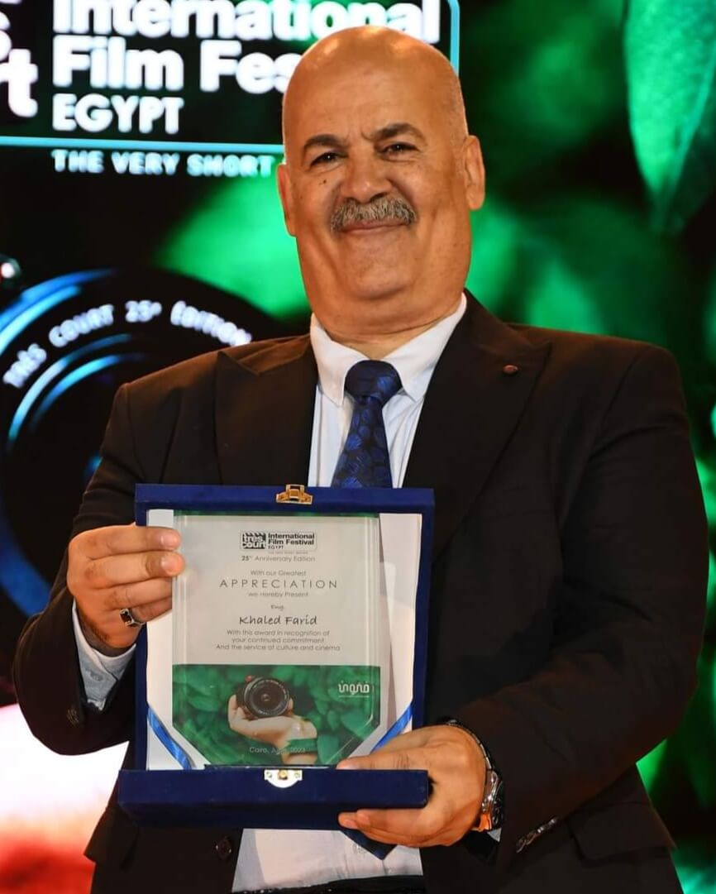

مصري .. مواليد 7 مايو 1964 تخرج في جامعة حلوان عام1985 قسم الهندسة الميكانيكية يعمل مدير تحرير بوكالة انباء الشرق الاوسط
يعشق التصوير الفوتوغرافي .. عمل بدار الاوبرا في تصوير الباليه ليبتكر فكره خارج الصدوق للوصول لتعليم المكفوفين التصوير..عن طريق
ربط ايقاعات الموسيقى بالتصوير فقام بإنشاء مؤسسة {عين مصر} ومبادرة {قد التحدي}.. و درب العديد من المكفوفين علي التصوير الاحترافي
بشكل مجاني كان يقوم بالتصوير و هو يرتدي ماسك عمل علي هذا لمدة 3سنوات وكان يطور من نفسه يومآ بعد يوم و قال: ان التصوير بحاسة
السمع اكثر دقة من العين ... من هنا بدأت قصة النجاح و قبل ان نتكلم عن قصص النجاح يجب ان نشكر الشخصيه المهمه في هذه القصه
تساعد و تساهم حتي الان في هذا النجاح العظيم وهي زوجته و هي تستحق مقولة وراء كل رجل عظيم امرأة عظيمة

بدأت القصه عام 2018
و خلال فعاليات الملتقي العربي الاول لمدارس الدمج و ذوي الاحتياجات الخاصه تحدث مع معالي الدكتور طارق شوقي وزير التربية و التعليم عن الفكره و يريد الغاء الاختلاف بين المكفوفين و المبصرين و يعمل علي ايجاد حل لاعادة لدمجهم مع اخوانهم من المبصرين
عام 2019
هذا العام مليء بالأحداث لا تذهبو الي اي مكان قبل ان تقرأو الاحداث التي بدأت في شهر فبراير عندما قامت بزيارتهم قناة(العربية) داخل ورشة التصوير للمشاهده و كيف يعلم فن التصوير الفوتوغرافي الاحترافي للمكفوفين حيث يقوم بتدريب المشاركين و تعليمهم المبادئ الاساسية الخاصة بالكاميرا و كيفية التعامل معها و ما هي الخصائص الخاصة بها و يتعامل المكفوفين معه من خلال الاحساس و السمع حيث يحدد الفرد منهم مكان وجود الجسم عن طريق قياس المسافه و سماع صوت الشخص فيضبط الكاميرا عليه و يقوم بالتصوير و قد نجح فريد في تعليم المشاركين من فاقدي البصر حفظ أجزاء الكاميرا و كيفية التعامل معها و الاحساس بحرارة الضؤ والتي من خلالها يستطيع المصور منهم تحديد الليل من النهار و التصوير من الزوايا التي تتناسب مع مصدر الضوء
و من اهم احداث فبراير اضاف فريد في تصريحات خاصة لجريدة الدستور أن من حق المكفوفين تعلم فن التصوير وأن يعملوا في الصحف أو المؤسسات كمصورين مؤكدًا أنه يعتمد في تعليمهم على حاستي اللمس والسمع مشيرًا إلى أن الكفيف عن طريق حاسة السمع يمكنه تحديد مكان الشخص وكذلك إتجاه نظره وأشار إلى أنه حاول التواصل مع قيادات وزارة التربية والتعليم من
أجل عمل ورش في المدارس لتعليم الطلاب المكفوفين فن
التصوير إلا أن الروتين حرمه من تنفيذ فكرته الرائعة حتى الآن مناشدا
الدكتور طارق شوقي وزير التربية بتبنى المبادرة ومساعدته في
عمل ورش داخل مدارس ذوي الاحتياجات الخاصة
و زاروا معرض الكتاب ليحضروا ندوة الفنان محمد صبحي.. و تم تصويره صوره رائعة التقطها المصور أحمد محمود أحد أعضاء ورشة التصوير الفوتوغرافي و هذه من اول النتائج العظيمة
و هنا اول استضافة مع الاعلامي سعيد حساسين في( برنامج أنفراد علي قناة الرافدين ) للتحدث عن فكره المحترف خالد فريد و التحدث مع المتدربين أحمد محمود و نورا عبدالمنعم عن التجربه
للتحدث عن اول ورشة لتدريب المكفوفين فن التصوير الفوتغرافي الاحترافي (Tan TV برنامج كلام بنات علي قناة ) و يوجد زياره من الصحفي اسلام غنيم من
و قبل ان نتحدث عن احداث شهر مارس يوجد اخر حدث في فبراير عندما قامة بزيارتهم جريدة {دوت مصر}
و قالو ان بدأت الورشة ب5 مكفوفين قرروا خوض هذا التحدي و قالو احد افضل الشعارات الذي رفعه عدد من فاقدي البصر و هو اضحك الصورة تطلع حلوة بنور قلوب المكفوفين فالارادة تقهر المستحيل
معلنين تحديهم لأى إعاقة بالنور الساطع من قلوبهم وحبهم للحياة، أبطال رفضوا الاستسلام وقرروا أن يخوضوا تجربة التصوير الفوتوغرافي بأنفسهم غير معتمدين على أحد بل وصل الأمر أن يقرروا أن يكونوا مصورين محترفين يعتمد عليهم كل من يرغب في التصوير
و أيضا لديهم شعار
محدش أحسن من حد هذا ما أكده طارق سعيد موظف بجامعة القاهرة هوى التصوير منذ صغره ولكن المحيطين به رفضوا إعطاؤه الكاميرا بيده خوفا عليها من التلف، وظل حلم التصوير يراوضه طيلة حياته حتى جاءت الفرصة وقرر التدريب عليه بورشة تدريبية مشيرا إلى أن بالعلم والتكنولوجيا الحديثة لم يعد شيئا مستحيلا وأصبح الجميع من حوله ممن كانوا يخشون في الماضي السماح له بلمس الكاميرا هم من يطلبون منه تصويرهم باحترافية و قال ان مفيش فرق بين المبصر والكفيف فالجميع يصور بحواسه
أما نورا عبد المنعم فهي فنانه من طراز خاص تخصصت في الموسيقى وتهوى الرسم والألوان التى كانت آخر نظراتها عليها منذ عدة سنوات قبل أن تفقد نور بصرها وهي طالبه بالصف الثانى الثانوى، فما زالت ذاكرتها تحمل شفرات الألوان وذكريات عنها وهو ما ساعدها على التدريب السريع على فنون التصوير في مدة شهر فقط استطاعت نورا أن تتقن التصوير الفوتوغرافي وتستعد أن تحترف ذلك وتعمل في مجال التصوير الاحترافي وإجراء جلسات تصوير للراغبين في ذلك معلنة أن الإرادة تقهر المستحيل فقط أعلنها صراحة انك تريد أن تكون
و في بداية مارس استضاف ( برنامج ترندينغ علي قناة بي بي سي نيوز عربي ) المصور المحترف خالد فريد و المتدربه المصوره تقي هشام السباعي للحديث عن ماذا فعل المحترف خالد فريد و كيف كانت هذه التجربه بالنسبه للمتدربة تقي هشام
و قامت الاعلامية داليا ايمن من (برنامج صباح البلد علي قناة صدي البلد) ب لقاء المتدربين لكي تفهم ما هي افكار خالد فريد و كيف تم تعليم المكفوفين فن التصوير الفوتوغرافي الاحترافي
و يوجد العديد من اللقاءات الاول{ جريده الوطن} مع الصحفية منة الصياد و الثاني مع الاعلامي و ائل الابراشي في (برنامج كل يوم علي قناة أون ) و الثالث علي (قناة يورونيوز )
للتحدث مع المحترف خالد فريد و كيف يعلم المكفوفين فن التصوير الفوتوغرافي الاحترافي و يكون (قد التحدي)
للتحدث عن ماذا فعل المحترف خالد فريد و من اين أتت فكره تعليم المكفوفين فن التصوير الفوتوغرافي الاحترافي (CGTNالقناة الصينيه ) و اخر لقاء في شهر مارس وهو لقاء مع
في شهر ابريل يوجد لقاءات الاول مع الصحفي عمرو ابو جبل في (برنامج القاهره اليوم علي قناة اليوم) و الثاني (برنامج مصر النهاردة علي قناة الاولي) ليتحدث عن قصة المحترف خالد فريد و المتدرب حسين مصطفي كيفيه تعلم فن التصوير الفوتوغرافى
في شهر يونيو تم تصوير فيلم لطشة نور وهذا برومو الفيلم و هو اول فيلم سينمائي يتكلم عن المكفوفين و حاصل علي الجائزة الذهبية في الفنون و الثقافة و الابداع من جنوب افريقيا مهرجان
الدولي و جائزة الجمهور بمهرجان يوسف شاهين Flickers والجائزة البرونزيه من مهرجان International Tourism Film Festival Africa(ITFFA)
عام 2020
مصري من مواليد 7 مايو 1964و اتخرج من جامعة حلوان عام1985 من قسم الهندسة الميكانيكية و هو الان مدير تحرير بوكالة انباء الشرق الاوسط و يعشق التصوير الفوتوغرافي للغايه وبدا التصوير وهو في سن العاشرة عندما كان يعمل بدار الاوبرا لتصوير الباليه ليبتكر فكره من خارج الصدوق و قام بإنشاء مؤسسة {عين مصر} ومبادرة {قد التحدي} لتعليم فن التصوير الفوتوغرافي للمكفوفين و درب العديد من المكفوفين علي التصوير من خلال الموسيقي لانه ربط صوت الموسيقي مع حركة التصوير و من اين أتت هذه الفكره لانه كان يتعلم التصوير و هو يرتدي ماسك و كان يعمل علي هذا لمدة 3سنوات وكان يطور من نفسه يومآ بعد يوم و قال ان التصوير بحاسة السمع وليس العين و من هنا بدأت قصص النجاح و قبل ان نتكلم عن قصص النجاح يجب ان نشكر الشخصيه المهمه في هذه القصه التي كانت و مازالت تساعد و تساهم حتي الان في هذا النجاح العظيم وهي زوجة الدكتور خالد فريد و هي تستحق مقولة وراء كل رجل عظيم امرأة عظيمة
عام 2021
مصري من مواليد 7 مايو 1964و اتخرج من جامعة حلوان عام1985 من قسم الهندسة الميكانيكية و هو الان مدير تحرير بوكالة انباء الشرق الاوسط و يعشق التصوير الفوتوغرافي للغايه وبدا التصوير وهو في سن العاشرة عندما كان يعمل بدار الاوبرا لتصوير الباليه ليبتكر فكره من خارج الصدوق و قام بإنشاء مؤسسة {عين مصر} ومبادرة {قد التحدي} لتعليم فن التصوير الفوتوغرافي للمكفوفين و درب العديد من المكفوفين علي التصوير من خلال الموسيقي لانه ربط صوت الموسيقي مع حركة التصوير و من اين أتت هذه الفكره لانه كان يتعلم التصوير و هو يرتدي ماسك و كان يعمل علي هذا لمدة 3سنوات وكان يطور من نفسه يومآ بعد يوم و قال ان التصوير بحاسة السمع وليس العين و من هنا بدأت قصص النجاح و قبل ان نتكلم عن قصص النجاح يجب ان نشكر الشخصيه المهمه في هذه القصه التي كانت و مازالت تساعد و تساهم حتي الان في هذا النجاح العظيم وهي زوجة الدكتور خالد فريد و هي تستحق مقولة وراء كل رجل عظيم امرأة عظيمة
عام 2022
مصري من مواليد 7 مايو 1964و اتخرج من جامعة حلوان عام1985 من قسم الهندسة الميكانيكية و هو الان مدير تحرير بوكالة انباء الشرق الاوسط و يعشق التصوير الفوتوغرافي للغايه وبدا التصوير وهو في سن العاشرة عندما كان يعمل بدار الاوبرا لتصوير الباليه ليبتكر فكره من خارج الصدوق و قام بإنشاء مؤسسة {عين مصر} ومبادرة {قد التحدي} لتعليم فن التصوير الفوتوغرافي للمكفوفين و درب العديد من المكفوفين علي التصوير من خلال الموسيقي لانه ربط صوت الموسيقي مع حركة التصوير و من اين أتت هذه الفكره لانه كان يتعلم التصوير و هو يرتدي ماسك و كان يعمل علي هذا لمدة 3سنوات وكان يطور من نفسه يومآ بعد يوم و قال ان التصوير بحاسة السمع وليس العين و من هنا بدأت قصص النجاح و قبل ان نتكلم عن قصص النجاح يجب ان نشكر الشخصيه المهمه في هذه القصه التي كانت و مازالت تساعد و تساهم حتي الان في هذا النجاح العظيم وهي زوجة الدكتور خالد فريد و هي تستحق مقولة وراء كل رجل عظيم امرأة عظيمة
عام 2023
مصري من مواليد 7 مايو 1964و اتخرج من جامعة حلوان عام1985 من قسم الهندسة الميكانيكية و هو الان مدير تحرير بوكالة انباء الشرق الاوسط و يعشق التصوير الفوتوغرافي للغايه وبدا التصوير وهو في سن العاشرة عندما كان يعمل بدار الاوبرا لتصوير الباليه ليبتكر فكره من خارج الصدوق و قام بإنشاء مؤسسة {عين مصر} ومبادرة {قد التحدي} لتعليم فن التصوير الفوتوغرافي للمكفوفين و درب العديد من المكفوفين علي التصوير من خلال الموسيقي لانه ربط صوت الموسيقي مع حركة التصوير و من اين أتت هذه الفكره لانه كان يتعلم التصوير و هو يرتدي ماسك و كان يعمل علي هذا لمدة 3سنوات وكان يطور من نفسه يومآ بعد يوم و قال ان التصوير بحاسة السمع وليس العين و من هنا بدأت قصص النجاح و قبل ان نتكلم عن قصص النجاح يجب ان نشكر الشخصيه المهمه في هذه القصه التي كانت و مازالت تساعد و تساهم حتي الان في هذا النجاح العظيم وهي زوجة الدكتور خالد فريد و هي تستحق مقولة وراء كل رجل عظيم امرأة عظيمة
.jpg)
.jpg)
.jpg)
.jpg)
.jpg)
.jpg)